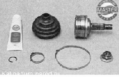

Наружный шарнир привода - снятие, замена защитного чехла и установка
Для выполнения работы потребуются:
— специальные клеши для установки хомутов крепления чехлов ШРУСов или раздвижные пассатижи;
— съемник наружных стопорных колец;
— смазка для ШРУСов — 40 см ;
— новый защитный чехол шарнира с новыми хомутами;
новые упорное и стопорное кольца шарнира.

Снятие
1. Снимаем привод в сборе ,
2. Концы всех четырех хомутов внутреннего и наружного шарниров на обоих валах направлены в сторону, противоположную вращению приводов при движении вперед. Для обеспечения правильной сборки, если хомуты будут использоваться повторно, маркером наносим на них метки, указывающие направление вращения.
3. Большими раздвижными пассатижами или специальными щипцами сжимаем большой хомут и при помощи шлицевой отвертки разъединяем замок хомута.
4. Таким же способом снимаем малый хомут защитного чехла наружного шарнира.
5. Шлицевой отверткой поддеваем и снимаем защитный чехол с корпуса наружного шарнира.
Поврежденный чехол можно удалить, разрезав его ножом.
При выполнении следующей операции, если шарнир будет использоваться повторно, нельзя наносить удары по сепаратору или корпусу шарнира.
6. Закрепляем вал привода в тисках. Нанося удары по внутренней обойме шарнира через выколотку из мягкого металла, спрессовываем наружный шарнир с вала привода.
7. Шлицевой отверткой поддеваем и снимаем со шлицев вала привода стопорное кольцо.
8. При помощи съемника наружных стопорных колец снимаем упорное кольцо.
9. Снимаем защитный чехол с вала привода.
10. Промываем шарнир в керосине, вытираем чистой тканью и даем высохнуть.
Установка
1. Чтобы не повредить новый чехол при установке, обматываем шлицы вала скотчем или изоляционной лентой.
2. Надеваем на вал новый защитный чехол, сдвигаем его к центру вала и удаляем скотч.
Совет
Не используйте для установки упорного кольца торцовую головку Внутренняя фаска, имеющаяся почти на всех головках, сожмет кольцо, что не позволит установить его на вал.
3. Закрепляем вал привода в тисках вертикально. Используя рожковый ключ на 24 мм как оправку, устанавливаем на шлицевой конец вала упорное кольцо.
4. Аналогично устанавливаем стопорное кольцо.
5. Смазываем шлицы вала смазкой для ШРУСов.
6. Устанавливаем шарнир на щшцевой конец вала. Через деревянный брусок запрессовываем шарнир на вал до его фиксации стопорным кольцом.
Для наружного шарнира необходимо 40 см^ смазки.
7. Заполняем шарнир смазкой для шарниров равных угловых скоростей. Оставшуюся часть (от 40 см ) смазки закладываем в защитный чехол.
8. Сдвигаем защитный чехол в сторону шарнира так, чтобы большой уплотнительный пояс защитного чехла был полностью надет на корпус шарнира, а малый уплотнительный пояс встал в проточку вала.
9. Приподняв уплотнительный пояс малого диаметра шлицевой отверткой, выпускаем из внутренней полости чехла воздух.
10. При помощи больших раздвижных пассатижей или специальных клещей для установки хомутов и шлицевой отвертки устанавливаем большой и малый хомуты защитного чехла. Хомуты устанавливаем с учетом направления вращения привода. Наружный конец хомутов должен быть направлен в сторону, противоположную вращению привода при движении вперед.
Совет
Перед установкой собранного привода на автомобиль обязательно поставьте новое стопорное кольцо на шлицевой хвостовик внутреннего шарнира.
11. Устанавливаем привод в сборе на автомобиль.